- 葉の平均が最適葉の平均のコストで決まる最適解が一意なら、その平均がその葉の SPO 損失を最小にする（定理 1）。非凸で不連続な SPO 損失でも、木の学習は葉の分け方を選ぶ問題になる。
- 26.7%訓練データ 200 件の最短経路問題で、深さ 1 の SPOT（貪欲法）は深さ 1 の CART より、正規化した余分な所要時間を平均 26.7% 減らした（4 つのデータ設定の平均）。
- 葉の数は半分以下訓練データ 10000 件で深さが大きいか無制限のとき、決定の質は CART と同程度で、SPOT の葉の数は CART の半分に満たなかった（論文の付録 E）。
予測してから最適化する枠組みでは、予測の誤差ではなく決定の損失で学ぶのが自然である
論文は、制約は既知で、線形の目的関数の係数（コスト）\(c\in\mathbb{R}^d\) だけが分からない意思決定問題を考える。実行可能領域を \(S\) とし、コストが分かっていれば次の問題を解いて決定 \(w^*(c)\) を出す。
例えば最短経路問題なら \(c\) は道ごとの所要時間で、\(w\) はどの道を通るかを表す。決定する時点では \(c\) が分からないので、特徴量 \(x\)（曜日、時刻、雪かどうかなど）からモデル \(f\) でコストを予測し、\(\hat c=f(x)\) を入れて \(w^*(\hat c)\) を決定とする。これが予測してから最適化する（predict-then-optimize）枠組みである。
モデルはふつう二乗誤差 \(\lVert\hat c-c\rVert_2^2\) などの予測の誤差で学習する。しかし実務で知りたいのは、予測から得た決定がどれだけよいかである。Elmachtoub と Grigas が提案した SPO 損失（Smart Predict-then-Optimize loss）は、予測 \(\hat c\) に従って決めたときに、真のコスト \(c\) のもとで最適な決定と比べてどれだけ余分にかかるかを測る。
\(W^*(\hat c)\) は \(\hat c\) のもとでの最適解の集合で、最適解が複数あるときは最悪のものをとる。SPO 損失は \(\hat c\) について非凸で不連続なので、これで直接学習するのはおそらく難しいと Elmachtoub と Grigas は述べ、凸な代理損失 SPO+ を使った。Wilder らも微分できる代理損失を使っている。代理損失は SPO 損失の意味で最適な決定を取り戻す保証がない。SPO 損失そのもので機械学習モデルを学習する実用的で一般的な方法はまだなかった、と論文は述べる。
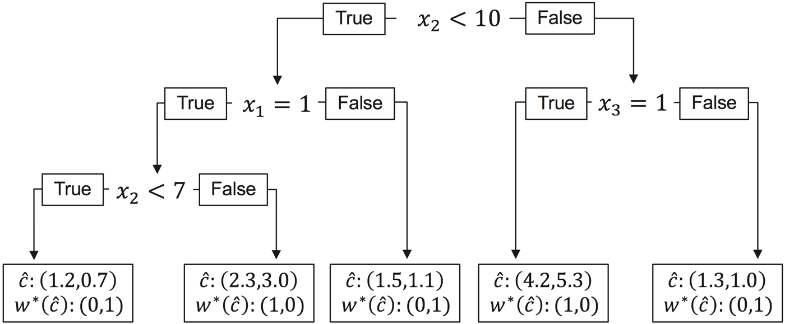
予測の誤差を減らす分岐は、決定が切り替わる境目と一致するとは限らない
論文は、道が 2 本で特徴量が 1 つの例で SPOT と CART の違いを示す。\(x\) を Uniform(0,1) から 10000 個とり、所要時間を \(c_1=5x+1.9\)、\(c_2=(5x+0.4)^2\) とする（説明のため雑音なし）。2 本の所要時間は \(x=0.28\) で等しくなり、それより小さい \(x\) では道 2、大きい \(x\) では道 1 が速い。
深さ 1 の SPOT は分岐「\(x<0.28\)」で、最初から正しい境目を見つける。ほかのどの分岐でも訓練データでの SPO 損失が大きくなるので、これは当然だと論文は述べる。一方、深さ 1 の CART は \(x<0.62\) で分ける。どちらの葉でも道 2 の予測が道 1 より大きいので、どの \(x\) でも道 1 を選ぶことになり、予測した決定の境目は \(x=0\) になる。CART の予測のほうが正確なこともあるが、決定は 28% の \(x\) で最適でない。CART は深さ 4 まで使うとほぼ正しい境目を取り戻す。
図2 深さ 1 の分岐点を動かしたときの葉の平均と 2 つの損失（論文 3.1 節の式を使い、解説者が \(x\) を 0 から 1 に等間隔に並べて計算した図）。下の段の 2 本の曲線はそれぞれの最大値で割って描いている。オレンジの曲線（予測の二乗誤差）は \(s=0.62\) 付近で、青の曲線（SPO 損失）は \(s=0.28\) 付近で最小になり、論文の値と合う。損失の数値は解説者の計算で、論文の表の値ではない。
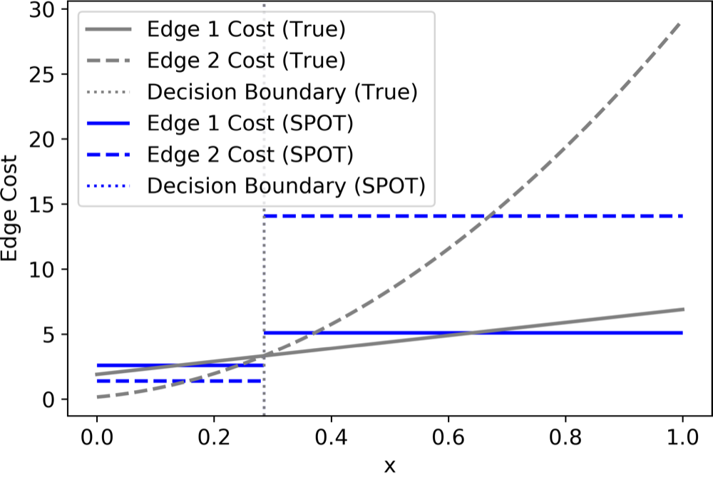
(a) SPOT（深さ 1）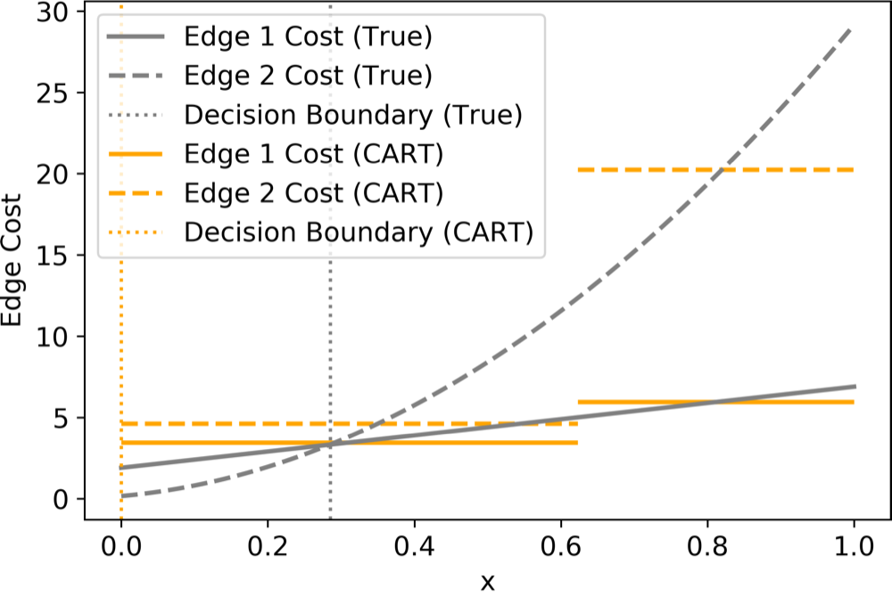
(b) CART（深さ 1）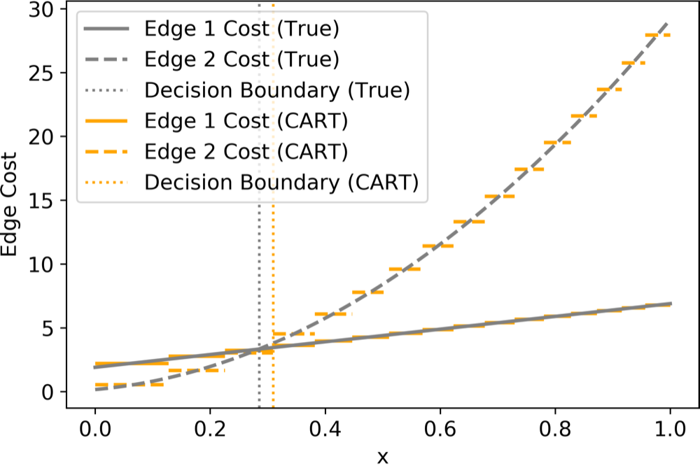
(c) CART（深さ 4）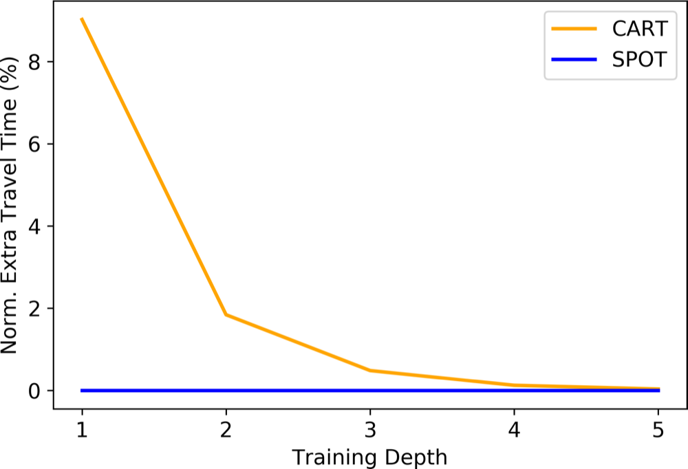
(d) 深さごとの正規化した余分な所要時間データが十分にあれば、CART のように予測の誤差で学ぶ木でも、深くすれば予測がほぼ正確になり、決定もほぼ最適になりうる。しかし訓練データが少ないと、葉ごとにある程度の件数が要るので深い木は作れない。そのときは 1 つ 1 つの分岐が決定にどれだけ役立つかが重要になる、と論文は述べる。浅い木は解釈しやすく、過学習もしにくい。
葉の中では平均のコストが SPO 損失を最小にするので、木の学習は葉の分け方を選ぶ問題になる
決定木は訓練データを \(L\) 個の葉 \(R_1,\dots,R_L\) に分け、葉ごとに 1 つの予測 \(\hat c_l\) を置く。学習は木の形で作れる分け方（\(R_{1:L}\in\mathcal T\)）のなかで次の値を最小にする問題である。
葉 \(l\) のコストの平均を \(\bar c_l\) とする。\(\bar c_l\) のもとでの最適解が一意なら、\(\bar c_l\) がその葉の SPO 損失の和を最小にする（定理 1）。証明は短く、葉の中では \(\sum_i c_i^\top w=N_l\,\bar c_l^\top w\) が成り立ち、\(w^*(\bar c_l)\) がそれを最小にすることを使う。最適解が一意でないのはコストが零ベクトルのような退化した場合に限られ、実際には訓練データのコストに小さな雑音を足せば一意にできると論文は述べる。
これで葉の中の非凸な最小化が消え、学習の問題は次のように書ける。
葉ごとに平均のコストで最適化問題を 1 回解けば、その葉の決定と損失が決まる。予測値そのものは CART と同じく葉の平均なので、2 つの木の違いは分け方の選び方だけにある。
貪欲法は分岐の候補ごとに最適化問題を葉の数だけ解き、MILP は貪欲法の木から始めてそれを改善する
貪欲法（再帰的な分割） CART と同じ手順で、分岐の候補 \((j,s)\)（特徴量 \(j\) と分岐点 \(s\)。数値の特徴量は \(x_{ij}\le s\)、カテゴリの特徴量は \(x_{ij}=s\) で分ける）を順に試し、訓練データでの SPO 損失が最小のものを選ぶ。候補 1 つの評価は 2 つの葉に分けて平均のコストを求め、葉ごとに最適化を 1 回ずつ解いて損失を足すだけなので速い、と論文は述べる。連続の特徴量ではすべての値を試す代わりに分位点だけを候補にする。最大の深さや葉の最小件数に達するまで再帰的に分け、SPO 損失を基準にした CART の枝刈りもできる。
混合整数線形計画（MILP） \(S\) が線形と整数の制約だけで書けて有界なら、上の問題は MILP と同値になる（定理 2）。\(r_{il}\) をデータ \(i\) が葉 \(l\) に入るかの 0/1 変数、\(w_l\in S\) を葉 \(l\) の決定とすると、
となる。\(M_1, M_2\) は \(c_i^\top w\) と \(-c_i^\top w\) の上界で、\(S\) が有界なので有限になる。木の形の制約 \(r\in\mathcal T\) には、連続とカテゴリの分岐を扱え、役に立たない葉をまとめられることから、Bertsimas と Dunn の OCT の定式化を使う。論文は付録で、OCT で使わない分岐ノードの扱いが正しく実装されていないと考えられると述べ、その制約を直して使っている。
貪欲法の木は MILP の実行可能解なので、それを初期解にすると、途中で打ち切っても貪欲法以上の解が得られる。論文は MILP を「解の改善の道具」として使うことを勧め、実験では 12 時間の時間制限をつけている。最適性を証明するまで解いたとは書いていない。
SPO Forests ランダムフォレストと同じく、ブートストラップ標本と特徴量のバギングで貪欲法の SPOT を \(B\) 本作る。新しい \(x\) に対しては各木の予測コストを平均し、その平均のもとでの最適な決定を返す。森は分散が小さくなる代わりに、解釈しやすさを失う。
訓練データが 200 件のとき、深さ 1 の SPOT は深さ無制限の CART より決定の損失が小さいことが多かった
4 × 4 の格子で、北か東にだけ進める 24 本の道を通って南西の角から北東の角へ向かう最短経路問題である。特徴量は 5 個で、所要時間は \(c_{ik}=\bigl(\tfrac{1}{\sqrt p}(Bx_i)_k+1\bigr)^{\mathrm{deg}}\cdot\varepsilon_i^k\) で作る。\(\mathrm{deg}\) は非線形の強さ、\(\varepsilon\) は Uniform\([1-\bar\varepsilon,1+\bar\varepsilon]\) の掛け算の雑音である。設定ごとに行列 \(B\) を変えて 10 個のデータセットを作り、1000 件のテストデータで正規化した余分な所要時間を測った。葉の最小件数は 20、訓練データの 20% を検証用にして枝刈りし、森は 100 本の木を使う。
\(n=200\)、\(\mathrm{deg}\in\{2,10\}\)、\(\bar\varepsilon\in\{0,0.25\}\) のすべての設定で、SPOT は CART を大きく上回った。4 設定の平均で、貪欲法の SPOT は同じ深さの CART より余分な所要時間を、深さ 1・2・3・無制限でそれぞれ 26.7%・26.8%・23.1%・23.6% 減らした。深さ 1 の SPOT が深さ無制限の CART より損失が小さいことも多い。葉に最低 20 件が要るので、CART は深さを無制限にしても深さ 4 より先に進めなかった。森どうしでも SPO Forest は CART Forest より平均 20.5% よく、ばらつきも小さかった。MILP の SPOT は貪欲法よりさらによく、設定によっては森も上回った。
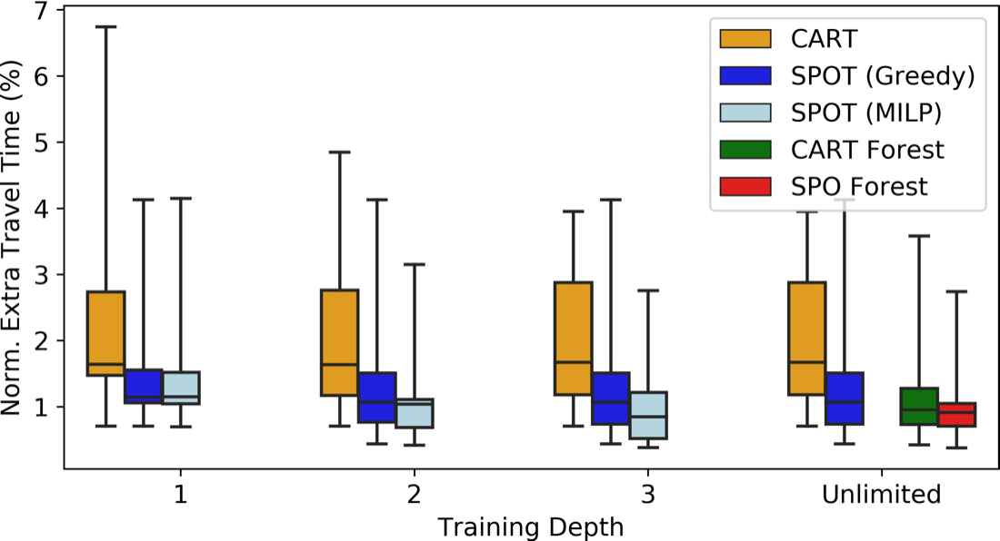
(a) deg = 2、\(\bar\varepsilon\) = 0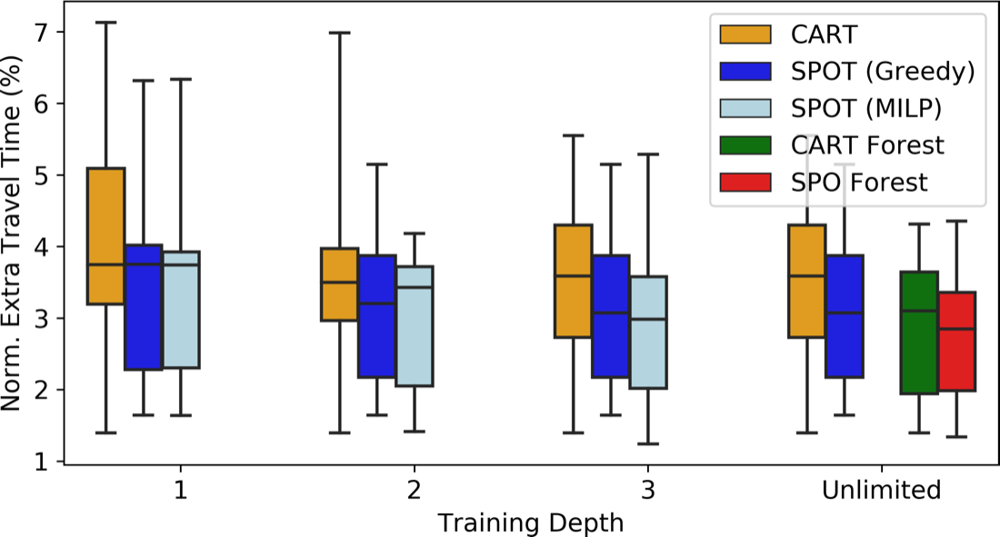
(b) deg = 2、\(\bar\varepsilon\) = 0.25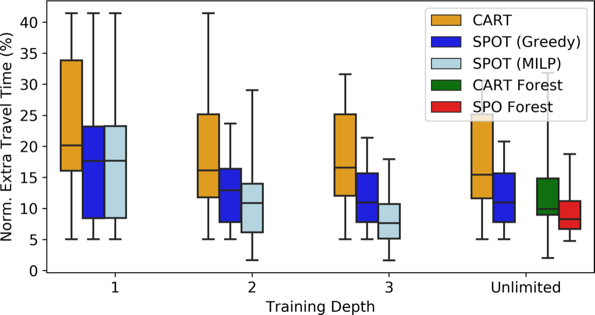
(c) deg = 10、\(\bar\varepsilon\) = 0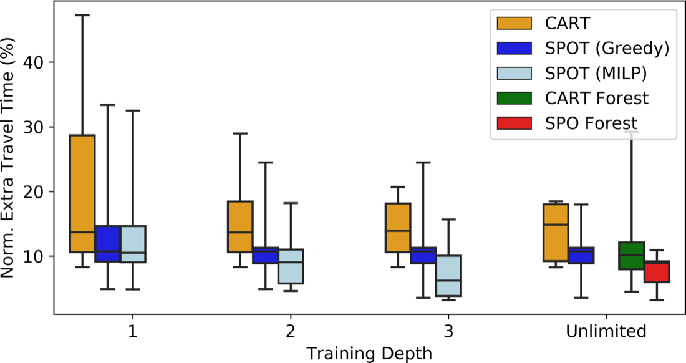
(d) deg = 10、\(\bar\varepsilon\) = 0.25\(n=10000\)、\(\bar\varepsilon\in\{0,0.5\}\) では深さ 6 まで試した。データが多いと CART も予測がほぼ正確になるので、差は小さくなる。深さが小さいか中くらいのうちは SPOT のほうが平均もばらつきもよいが、深さ 6 以上では CART が同程度になり、設定によってはわずかに上回った。森どうしでは CART Forest がわずかによく、貪欲法と MILP の SPOT は同程度だった。それでも深さが大きいか無制限のとき、SPOT の葉の数は CART の半分に満たなかった。
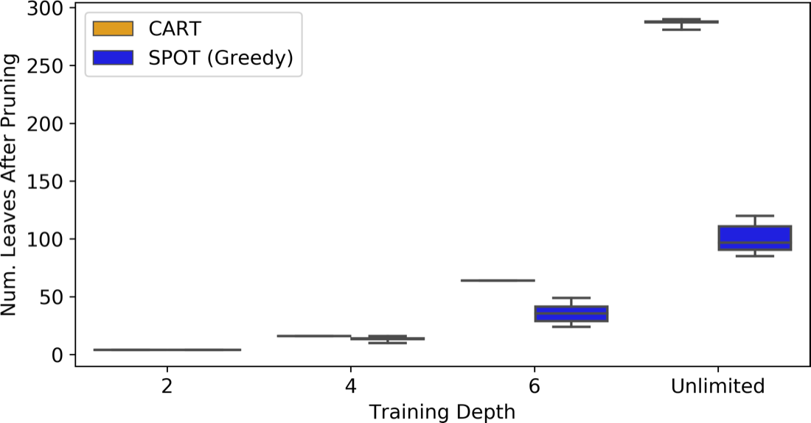
(a) deg = 2、\(\bar\varepsilon\) = 0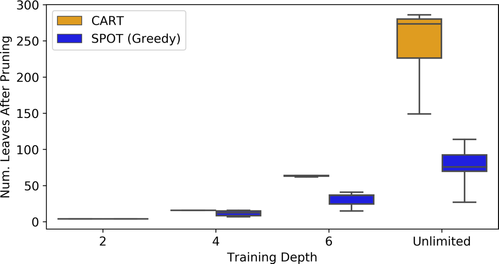
(b) deg = 2、\(\bar\varepsilon\) = 0.5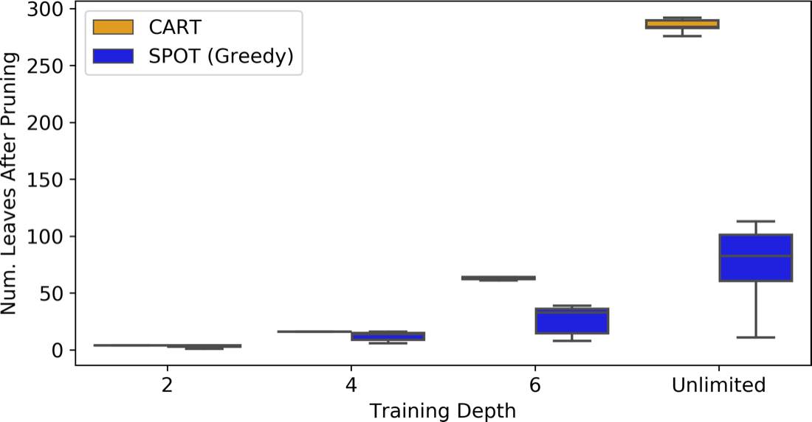
(c) deg = 10、\(\bar\varepsilon\) = 0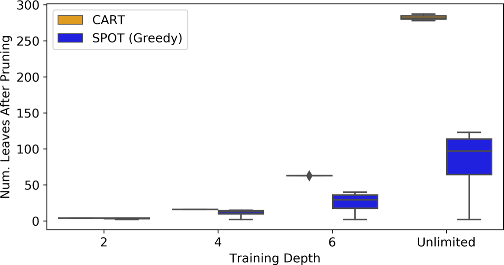
(d) deg = 10、\(\bar\varepsilon\) = 0.5実データのニュース推薦でも、深さ 2 の SPOT は深さ無制限の CART よりクリック率が高かった
Yahoo! Front Page Today Module のデータ（2009 年 5 月 1〜10 日、45,811,883 件の閲覧記録）から問題を作る。記事は 6 種類に分けてあり、ニュースの配信者は来た利用者に推薦する記事の種類を確率 \(w\) で決める。目的はクリック確率 \(p\) の期待値 \(p^\top w\) の最大化で、\(a_m^\top w\le b_m\)（\(m=1,\dots,5\)）の制約がある。\(p\) は利用者の特徴量（5 個）から予測する。
利用者を 10000 個のクラスタにまとめ、クラスタごとに平均の特徴量と記事の種類ごとの平均クリック確率を 1 組のデータにした。記録の少ないクラスタを除くと、訓練・検証・テストはそれぞれ 5130・5105・8768 組になった。前半 5 日を訓練と検証、後半 5 日をテストに使い、各組には閲覧記録の件数を重みとしてつける。制約の係数 \(a_m\) は Exponential(1) から引き（\(b_m=1\)）、9 通りの制約で比べた。
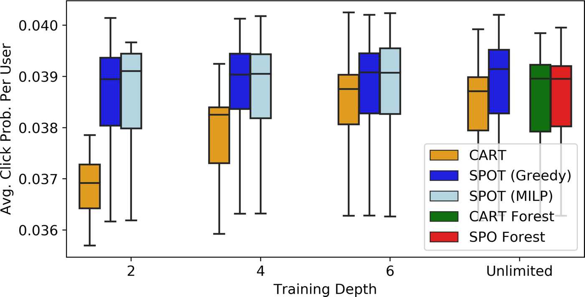
深さ 2 の貪欲法の SPOT は深さ 2・4・6・無制限の CART より平均クリック確率をそれぞれ 4.3%・1.6%・0.05%・0.17% 高めた。MILP の SPOT は貪欲法と同程度だった。2 種類の森も同程度だったが、意外にも 1 本の SPOT よりわずかにクリック確率が低かった。論文は、森が訓練データに過学習したためかもしれないと述べている。深さ無制限の貪欲法の SPOT は、制約 1 通りあたり最大 1.3 時間で学習が終わり、枝刈りの前は深さ 28〜38、枝刈りの後は平均で深さ 7 だった（補足資料の付録 F）。
OCT の MIO の定式化を使い、分類の誤差の代わりに予測から得た決定の損失を最小にする
- 分岐：単変量（1 つの特徴量で分ける）。数値の特徴量は不等号、カテゴリの特徴量は等号で分ける。
- 葉の出力：葉の平均のコスト \(\bar c_l\) と、それを入れて最適化した決定 \(w^*(\bar c_l)\)。出力は最短経路や制約つきの推薦のような線形の目的関数をもつ最適化問題の解である。
- 目的関数：訓練データでの SPO 損失の平均（決定の後悔）。予測の誤差は直接は使わない。
- 解き方：CART と同じ形の貪欲法と、OCT（Bertsimas と Dunn）の定式化を使った MILP。MILP は貪欲法の解から始める。実験では正則化に、MILP の目的関数に分岐の数の罰則を入れる代わりに、SPO 損失を基準にした CART の枝刈りを使っている。
- 最適性の保証：MILP を最後まで解けば、深さを決めたときの訓練データでの SPO 損失が最小の木が得られる。ただし実験では 12 時間で打ち切っており、最適性が証明されたかどうかは書かれていない。
- データ：最短経路の合成データ（4 × 4 の格子、24 本の道、特徴量 5 個）と、Yahoo! Front Page Today Module から作ったニュース推薦のデータ。
- コード：github.com/rtm2130/SPOTree
同じ文献リストの OCT や BinOCT、Günlük らの整数計画 は分類の誤差を最小にする木を求める。この論文はそうした整数計画の流れを、決定の損失で学ぶ木に広げている。処方的な木の Kallus や OPT は、有限個の処置から 1 つを推薦する問題を扱う。この論文は多くの決定を含みうる一般の実行可能領域 \(S\) から決定を選ぶ、より広い問題を扱うと述べる。OPT は予測の誤差と決定の誤差の重みつきの和を目的関数にする点でも違う、と論文は述べている。
（解説者の注）この論文の訓練データ \((x_i,c_i)\) では、各データのコストのベクトル全体が観測できる前提になっている。処方的な木の論文の多くが扱う観察データでは、選ばなかった処置の結果は観測できない。この点も両者を比べるときの違いになる。
（解説者の注）定理 1 によって、葉の予測値は CART と同じく平均のまま、分岐の評価だけを決定の損失に替えればよいことになる。そのため、既存の木の学習の枠組み（貪欲法、MIO の定式化、枝刈り、森）がほぼそのまま使える。一方で、貪欲法では分岐の候補ごとに最適化問題を解くので、1 回の評価にかかる時間は最適化問題の大きさに依存する。
このページの数値・定理番号・図番号は ICML 2020 の出版版（PMLR 119、本文と補足資料）による。arXiv v2（2020 年 6 月）とも照合し、数値は一致した。arXiv v2 では \(n=10000\) の結果が本文にあり、図番号が異なる。図の画像は arXiv v2 の LaTeX ソースから取った。PMLR には DOI がないため、書誌は PMLR のページで確認した。
@inproceedings{elmachtoub2020decision,
title = {Decision Trees for Decision-Making under the Predict-then-Optimize Framework},
author = {Elmachtoub, Adam N. and Liang, Jason Cheuk Nam and McNellis, Ryan},
booktitle = {Proceedings of the 37th International Conference on Machine Learning},
series = {Proceedings of Machine Learning Research},
volume = {119},
pages = {2858--2867},
year = {2020},
publisher = {PMLR},
url = {https://proceedings.mlr.press/v119/elmachtoub20a.html}
}